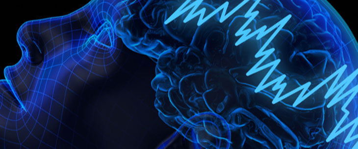

Treating Addiction with Music
Addiction used to be considered a form of self-expression, a sign of selfishness and self-destructiveness, a choice a person made rather than a disease. These days, it has been established by many researchers and therapists that addiction is not a choice, but a disease and a compulsion that robs the addict of his or her choices. It led to the conclusion that addiction is not only a psychological disorder, but that it also has physical effects on the person, no matter whether they are addicted to a substance, or to an activity like gambling. While the psychological markers and triggers are similar, the effects of the addiction are different for substance abuse, like drugs and alcohol, and for an activity like gambling. It is one of the reasons why gambling addiction is a serious problem that needs to be explored and researched. Discover more about gambling addiction here.
Methods of treating addiction
Today, thanks to advanced research and new insights into addiction, and what causes it, and how it develops, psychologists and therapists have developed numerous methods of treating addiction. These methods include joining an Anonymous support group, getting into a 12-step program of recovery, or checking into an inpatient rehabilitation center, or joining an outpatient program and getting treatment with cognitive behavioral therapy. However, treatment does not end there. There are numerous other self-help methods that a problem gambler or an addict can use as a tool to help battle addiction. In this group, we have yoga exercises, mindfulness meditation, visualization, relaxation methods, as well as music therapy.
The therapeutic value of music
Listening to music is something that a lot of people do, but underestimate the power of. People add music into their lives constantly, when walking, cooking, relaxing and studying and without being aware of it, attach songs to feelings and memories, which later can influence a person’s mood and emotional wellbeing. For example, when a person is stressed or nervous, they unconsciously reach for music to help relax them. This means that there is great power in music, and if learn how to use it properly, music can be a very successful form of therapy.
Memories and emotions attach themselves a lot easier to sounds and smells, a lot more than sight, taste or the sense of touch. When it comes to music, it is highly stimulating, due to the fact that we remember music very easily, compared to words, conversations and dates and other stuff from daily life. Melodies and lyrics, they affect us a lot more than we realize, and later on, music has an effect on emotions, behaviors, and as such it can help deal with stress and help us relax.
Many people believe that the therapeutic effect and emotional effect of music is pretty straightforward. For example, it is widely considered that melancholic and sad songs can make a person feel sad in turn, while upbeat songs can improve a person’s mood. While this is true up to a point, a sad song can have an uplifting effect on a person if the song is connected to a happy memory. This way, music therapy can provoke a person’s emotions, and help theme express them better, and it can be a really good outlet for negative emotions. According to the American Music Therapy Association, music therapy is, by definition, is using music to help with physical, emotional, psychological and social needs of patients.
Treating Addiction with Music Therapy
When it comes to treating addiction, the most important thing to note is that addiction cannot be treated just with music, without professional help or joining an Anonymous group. Music therapy is a tool that will enhance the effects of following a 12-step program and getting cognitive behavioral therapy. Music, on the other hand, has a therapeutic effect on the body. It can lower blood pressure, stimulate creativity, and help a person overcome stressful moments and lessen the feeling of nervousness.
As such, music therapy is highly effective in helping addicts relax and fight instinctual cravings, and is especially effective in problem gamblers, whose emotional triggers and cues that make them gamble are often connected to stress and a desire to escape the problems in life. Music can be used in different manners, and different genres have been proven to have a calming effect, such as smooth jazz, blues and New Age instrumental music. Music is often used in group settings in rehabilitation centers to stimulate patients’ creativity and help them utilize music as an outlet for their emotions.
Another way that music can help in battling addiction is playing it. In other words, patients who have an affinity towards a musical instrument are encouraged to learn how to play. This will not only give them a different form of experiencing music, but it also allows them to create new, good memories while playing music on an instrument, which can later be used in a moment of crisis to create a good mood and help the addict prevent relapse.
On the other hand, it is not necessary that all recovering addicts learn how to play an instrument. The therapeutic benefits of music can be experienced while listening to music on a stereo or headphones. Patients are encouraged in creating playlists and track lists where they include genres and individual songs that help them relax and improve their mood. The effect of this is relaxation and stress reduction, which is highly helpful during addiction treatment and afterward, because battling addiction is a process that is difficult and often adds a lot of stress to the recovering addict’s life, especially if they are having impulse control issues and are on the verge of relapsing.
When it comes to making playlists and using media players to create a therapeutic musical environment, there is always Xnoise, a highly useful media player for GTK+. It has an intuitive user interface, it doesn’t encumber any system due to its relative lightness, while providing the user with a speedy player and clear sound. Users can listen to music and watch videos without having to switch to another player, and it has an intuitive library which can be very easily browsed for artists, individual songs, and videos. In the playlists, tracks are played one by one without being removed, and the users can reorder existing tracks, add new and remove the ones they don’t want with ease. It has many more positive features, including being available in many different languages, and album art for viewing the cover images.